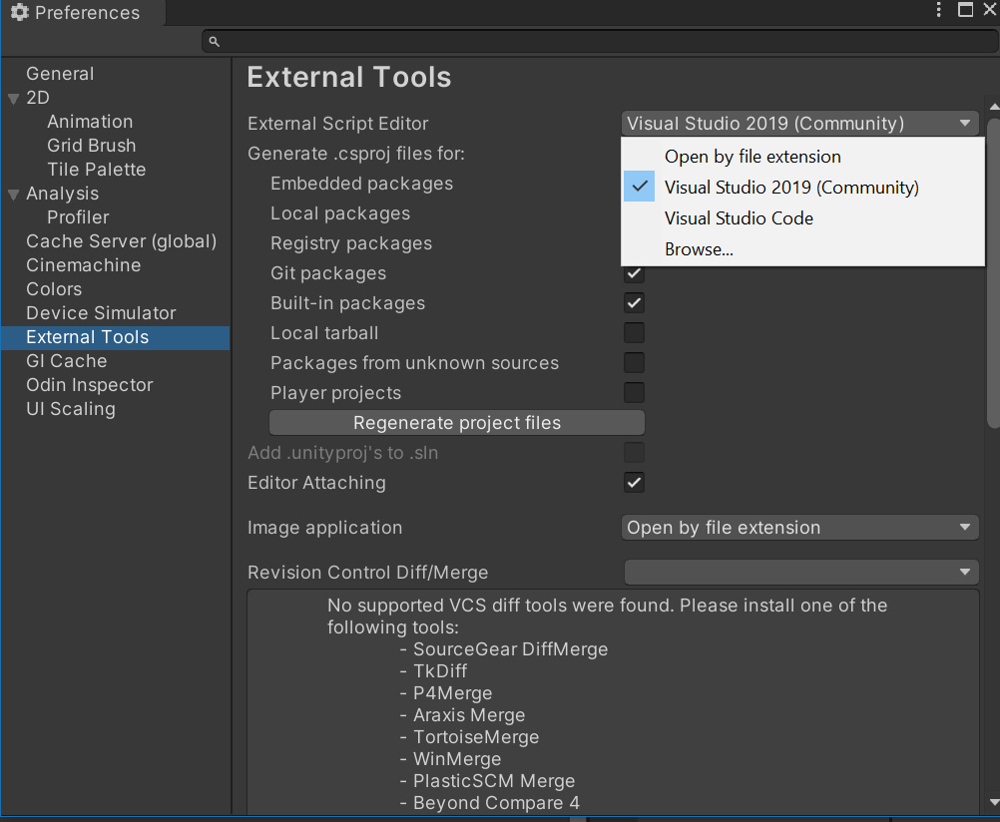
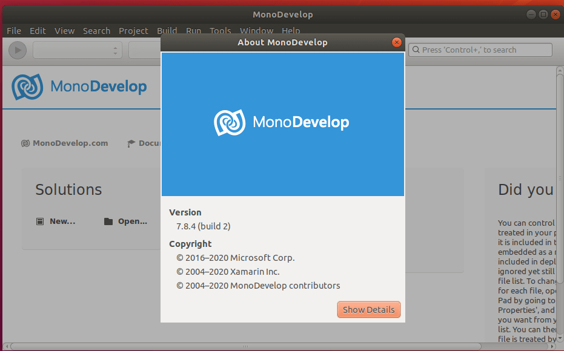
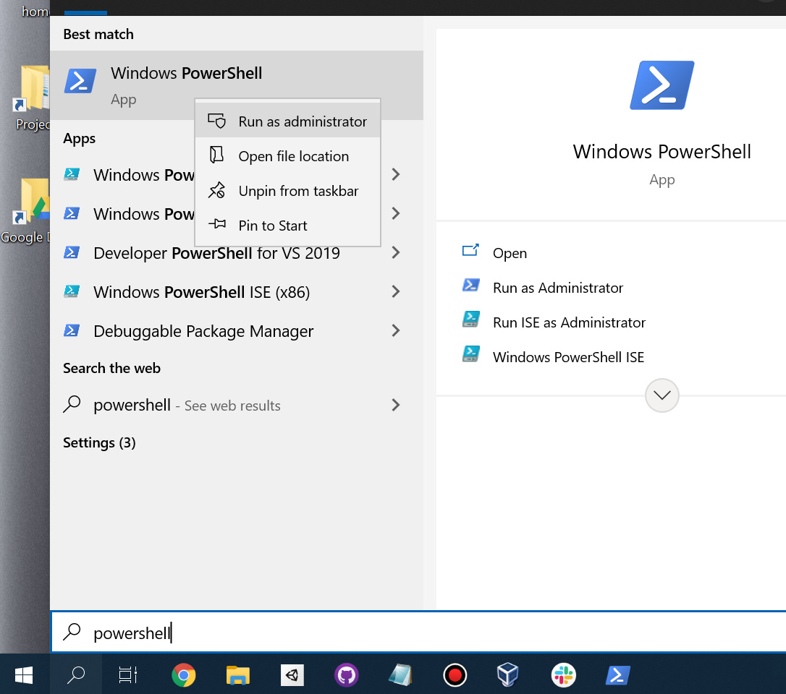
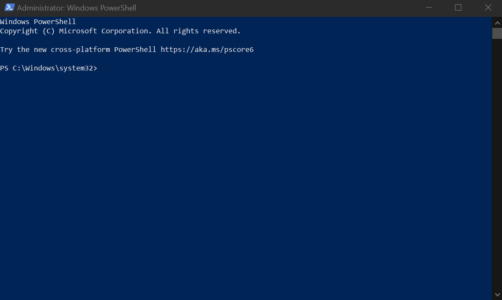

Setting up the development environment
Game Development Environment
Unity Engine
The development for Witch One (development title Catch.io) will be in most cases, done in Unity. We recommend installing Unity Hub as it supports various OS and can install multiple versions of the Unity Editor.
Installing Unity Hub
You can install the latest version of Unity Hub through this link or check the official download page.
Note that for Linux users, the link above will download the .AppImage executable of Unity Hub. Alternatively, you can install Unity Hub through the Pop!_Shop in Debian variant systems.
Engine Version
Currently, we are using Unity version 2021.2.3f1 (32358a8527b4).
You can check the official release archive from this page, or install directly via Unity Hub by clicking this link.
For Linux users who run Unity through an.AppImage executable, the deep link installation provided by the Unity release archive may not work. Instead, you will have to pass the deep link URL as a parameter for the application file from your terminal.
./UnityHub.AppImage unityhub://2021.2.3f1/32358a8527b4
Configuring Unity Editor
Setting The Default IDE
You can change your preferred IDE/Editor in Unity by going to the Edit -> Preferences -> External Tools menu. Regarding how to install the IDE and text editors, please refer to the next section.

General Development Environment
Version Control Software
Git & GitHub
Our team uses Git as the main version control software, and GitHub as the repository host: Team STEP GitHub Account
Installing The Git Client
Most IDEs offer a way to interact with the remote repository. If you have a preferred Git client, you are free to use it. For most developers, our team recommend using GitHub Desktop, as it offers a robust GUI, auto-configuring the global Git settings, and automatically updating repository submodules.
You can install GitHub Desktop on Windows 10 and macOS from the official website: GitHub Desktop
For Linux users, you can install a fork of GitHub Desktop maintained by Shiftkey (releases)
For Windows users, we also recommend installing the Windows Git client that comes with the Bash terminal. Bash on Windows allows you to access applications installed with PowerShell as well. Downloading Git.
Setting Up IDE & Text Editors
Visual Studio Community
Note: Visual Studio Community is not supported on Linux systems
When working with Unity, we generally recommend using Visual Studio, as it provides full support for Unity including breakpoints and unity game object component reference checking.
Although Unity will ask you to install Visual Studio before you install the engine in Windows, you might want to have a full installation of Visual Studio if you need extra features. In which case, you can install the IDE.
MonoDevelop
Note: MonoDevelop is not a requirement for developing on a Linux environment. The guide below adds the package repository from Ubuntu 18, as that is the only way you can install it on later versions.
MonoDevelop is an open-source cross-platform IDE that supports languages like C#, F#, Visual Basic .NET, and Vala. You can find more information on their homepage. Generally speaking, MonoDevelop is considered to be a replacement for Visual Studio for Linux systems. If you're using Windows 10 or macOS, we recommend installing Visual Studio Community instead of MonoDevelop.
This installation guide will assume that the user is working on Ubuntu-based systems (LTS 20.04 or up).
First, add the Mono repository to your system.
# update your repository. Upgrade any packages if you have to
sudo apt update && sudo apt upgrade
# install the basic dependencies
sudo apt install dirmngr gnupg apt-transport-https ca-certificates
# add the mono repository key
sudo apt-key adv --keyserver hkp://keyserver.ubuntu.com:80 --recv-keys 3FA7E0328081BFF6A14DA29AA6A19B38D3D831EF
# add the app repository to your apt source
sudo sh -c 'echo "deb https://download.mono-project.com/repo/ubuntu stable-bionic main" > /etc/apt/sources.list.d/mono-official-stable.list'
# refresh your repository list
sudo apt update
Second, install the full MonoDevelop package and the IDE
# install the full mono package
sudo apt install mono-complete
# install the monodevelop IDE
sudo apt install monodevelop
# install the .Net NUit unit test packages
sudo apt install monodevelop-nunit
Lastly, check your installation
# this command should output the compiler version if your installation was complete
mono --version
Your IDE should look something like this:

This guide was based on the article written by Website For Students.
Visual Studio Code
Visual Studio Code is a lightweight text editor (until you install a boatload of extensions) for developers on all major platforms. There are several Visual Studio Code extensions that work with the Unity Engine. It does not support everything that Visual Studio can do with Unity, but we recommend install VS Code as it is great for development that is outside of Unity (such as web development, or PR review/resolving merge conflicts).
You can install Visual Studio Code from here.
Visual Studio Code must be configured properly before it can work with Unity. This is the list of recommended extensions that we use at the time of this writing.
extensions.json
{
"recommendations": [
"editorconfig.editorconfig",
"aaron-bond.better-comments",
"ms-dotnettools.csharp",
"jchannon.csharpextensions",
"streetsidesoftware.code-spell-checker",
"unity.unity-debug",
"donjayamanne.githistory",
"felipecaputo.git-project-manager",
"github.vscode-pull-request-github",
"formulahendry.github-actions",
"eamodio.gitlens",
"yzhang.markdown-all-in-one",
"davidanson.vscode-markdownlint",
"tobiah.unity-tools",
"ptd.vscode-unitymeta",
"redhat.vscode-yaml",
"dotjoshjohnson.xml"
]
}
settings.json
{
"editor.defaultFormatter": "EditorConfig.EditorConfig",
"markdownlint.config": {
"html": true,
"MD033": false,
},
"[jsonc]": {
"editor.defaultFormatter": "vscode.json-language-features"
},
"omnisharp.enableEditorConfigSupport": true,
"editor.formatOnSave": true,
"cSpell.words": [
"Tilemap",
"Tilemaps",
"gameplay",
"royale",
"tileset"
]
}
Editing the contents of the .vscode/ folder in the root directory of the project allows the developer to change the default setting for developers working in VS Code. This means that all developers with a new installation of VS Code has to do is open VS Code from the root of the project folder.
Android Studio
Android Studio is a cross-platform IDE for developing applications for Android devices, commonly with Java and Kotlin.
Our team will rarely develop directly in Android Studio, but installing it allows us to easily install different versions of Android SDK, or access other development tools like the Android Device Emulator. Plus, Android Studio is available for most commonly used OS, so if your disk space can handle it, we recommend installing it from their official installation page.
System Terminal and Package Manager
Windows 10 - Chocolatey
No sane developers will use Windows for its terminal or package management, but here we are.
This section will guide you through installing Chocolatey, a package manager for Windows.
Windows system comes with PowerShell and the Command Line Prompt as its main terminal. Alternatively, you can install Bash that comes with the Windows Git client (mentioned in the previous section). For this guide, we will be using PowerShell.
To access PowerShell with administrative rights, click on the Windows search bar on the bottom left corner of your screen (next to the Windows button in the task bar), and search for PowerShell.

Right-click on the app and choose Run as administrator. When you open the terminal, it should look something like this:

Note that administrator sessions runs from Windows\system32 instead of the user home directory.
Paste the following command to your terminal.
Set-ExecutionPolicy Bypass -Scope Process -Force; [System.Net.ServicePointManager]::SecurityProtocol = [System.Net.ServicePointManager]::SecurityProtocol -bor 3072; iex ((New-Object System.Net.WebClient).DownloadString('https://chocolatey.org/install.ps1'))
This should install Chocolatey to your system. You can confirm it by using the choco command to your terminal.
You can read the detailed installation process from the official installation page.
macOS - Homebrew
Homebrew is a package manager for macOS. It offers a wide variety of applications that are a must-install for developers working from macOS.
Unlike Windows; macOS comes with a zsh terminal, which shares a lot of characteristics of bash. This means that most commands that works with bash will work on your Mac.
To install Homebrew, you simply open your terminal from the Utilities folder and paste the following command.
/bin/bash -c "$(curl -fsSL https://raw.githubusercontent.com/Homebrew/install/HEAD/install.sh)"
You can learn more from the official Homebrew page.